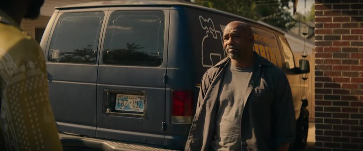
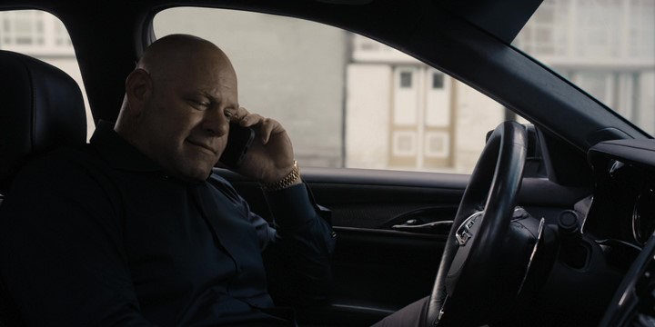

Tartalom
Dwight Manfredit 25 év után kiengedik a börtönből, maffiájának főnöke viszont nemes egyszerűséggel száműzi őt: Tulsába küldi, hogy ott alapítson új üzletet. Dwight felismerve, hogy „családjára” innentől nem számíthat, új birodalom építésébe kezd, egy számára teljesen ismeretlen helyen.
1.évad 1.rész
1.évad 2.rész
1.évad 3.rész
1.évad 4.rész
1.évad 5.rész
1.évad 6.rész
1.évad 7.rész

1.évad 8.rész
1.évad 9.rész
2.évad
Tartalom
Egy olasz maffiózót követhetünk nyomon, aki azzal a megdöbbentő feladattal szembesül, hogy újjá kell alapítania olasz maffiacsaládját a Missouri állambeli Kansas Cityben.
2.évad 1.rész
2.évad 2.rész
2.évad 3.rész
2.évad 4.rész
2.évad 5.rész
2.évad 6.rész
2.évad 7.rész

2.évad 8.rész
2.évad 9.rész
2.évad 10.rész